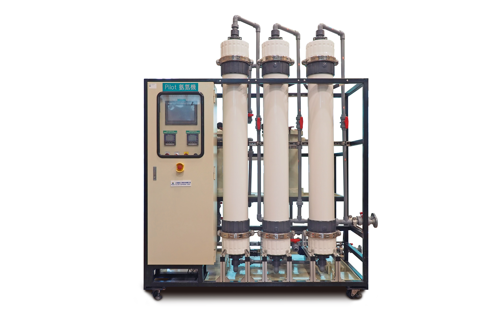
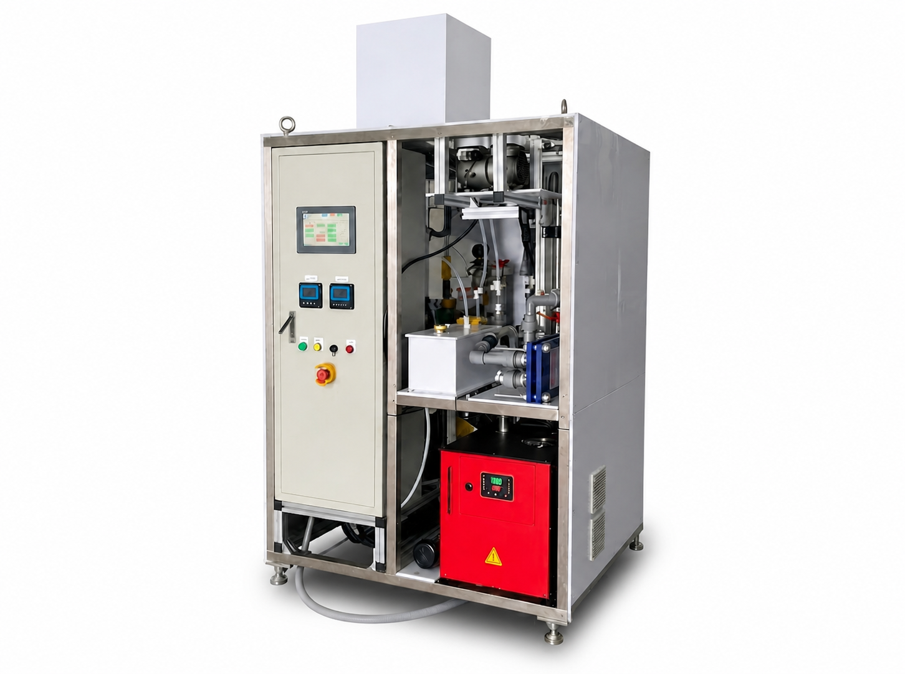

氨氮資源化與脫氨回收系統
Ammonia Nitrogen Recovery & Ammonia Removal Systems
氨氮資源化回收
Ammonia Nitrogen Recovery將進料液體內 NH4+ 離子轉換為氣態分子 NH3，藉由微孔疏水性薄膜（PTFE）兩側的氨蒸氣壓差，誘使 NH3 氣態分子由廢水側透膜傳遞至吸收側；依吸收液的不同，可使氨氮以不同產物形式進行資源化回收。

直接接觸薄膜蒸餾氨氮系統
DCMD Ammonia Removal System本設備可將工業廢水中的氨氮脫除，並經硫酸吸收後產製硫酸銨，可降低氨氮排放量且具回收循環再利用效益，降低廢水處理成本並提升資源利用效率。

真空薄膜蒸餾氨氮脫除系統
VMD Ammonia Recovery System利用真空薄膜蒸餾技術，將廢水中的氨氮以氣態形式選擇性分離，再經吸收塔以水或鹽酸吸收，回收製備氨水或氯化銨產物。